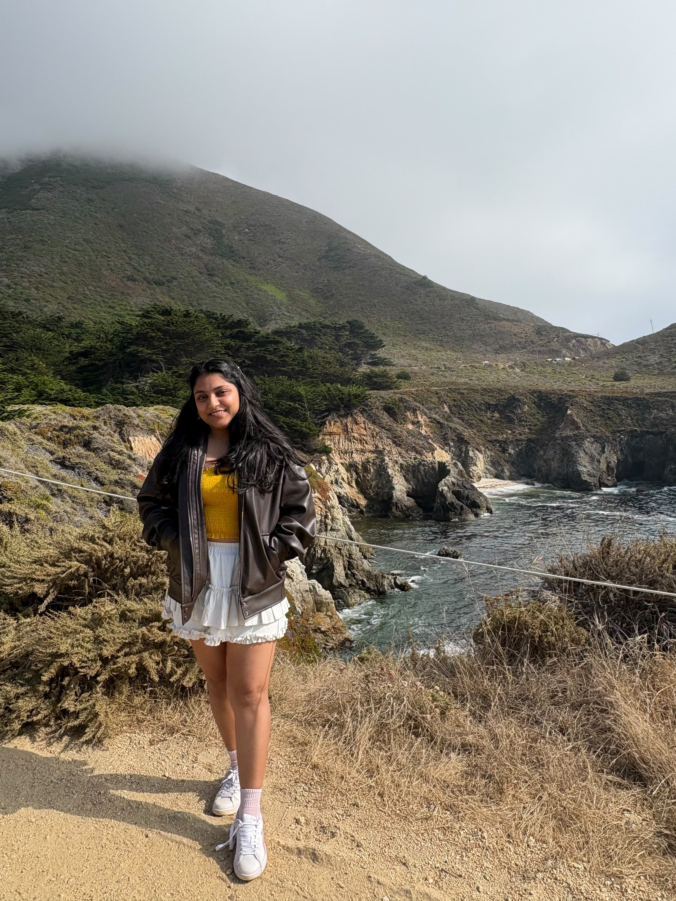

Current MCS student at UIUC. I work with Professor Dilek Hakkani-Tur as a Conversational AI Researcher. I am interested in NLP, Deep Learning, and AI. I have previously worked as a Software Engineer at ARM and NetApp for 3 years.
I graduate in May 2027 and I am looking actively for full-time opportunities in the field of AI and NLP.